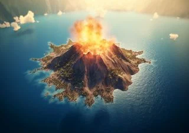
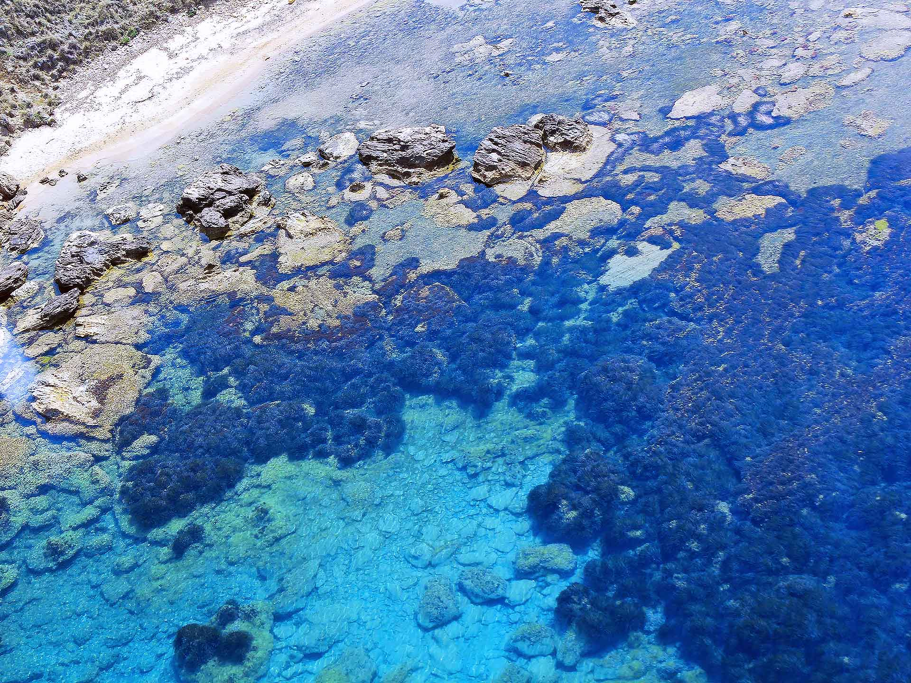

←PROTAGONISTA DI UNA DELLE VICENDE GEOPOLITICHE E GEOLOGICHE PIÙ BIZZARRE DELL'OTTOCENTO, QUESTA TERRA FANTASMA RAPPRESENTA UN UNICUM NELLA STORIA DEL MEDITERRANEO.
L'Isola Ferdinandea è un vulcano sottomarino nel Canale di Sicilia che nel 1831 emerse dal mare formando un'isola alta 65 metri. Francia, Spagna, Gran Bretagna e Regno delle Due Sicilie se ne contesero la sovranità, ma pochi mesi dopo l'isola sprofondò di nuovo. Oggi la sua sommità si trova a soli 8 metri sotto la superficie.
| Stato | 🟡 Quiscente |
| Regione | Sicilia |
| Paese | Italia |
| Eruzioni storiche | 3+ |
| Parco naturale | NO |
